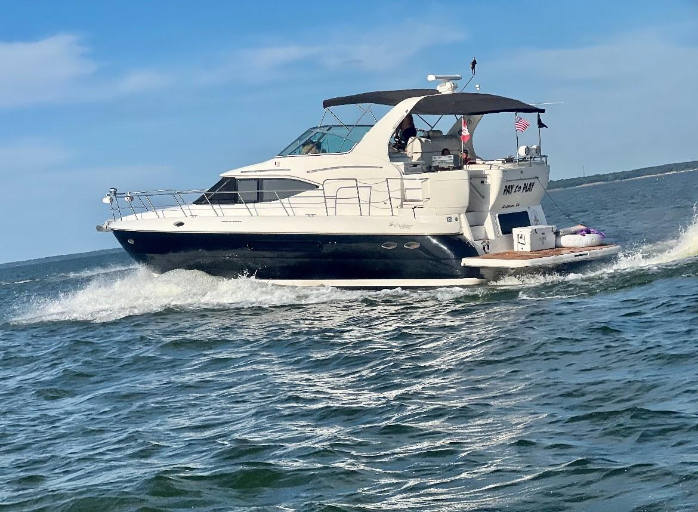

B-Atlas Boat Guide · CRUY-4050
Cruisers Yachts 4050 / 405 / 415 Express Motor Yacht Express Motor Yacht
2003–2014
The Cruisers Yachts 4050 Express Motor Yacht is a production aft-cabin motor yacht built around high interior volume, two-stateroom privacy and twin-engine coastal performance. Its multi-level deck plan trades easy all-on-one-level movement for substantial accommodation in a relatively modest overall length.

- Length
- 42.5 ft
- Beam
- 13.67 ft
- Draft
- 3.5 ft
- Hull behaviour
- Planing
- Fuel
- Gasoline
- Propulsion
- Shaft
- Engine configuration
- Twin Inboard
- Boat family
- Motor Yacht
- Construction
- Fiberglass
Best for
- Couples or families prioritizing accommodation over low operating cost
- Inland and coastal cruising with marina-based use
- Buyers wanting two private sleeping areas
Trade-offs
- Multiple steps between swim platform, aft deck, bridge and cabins
- High windage and relatively high air draft
- Twin-engine operating and maintenance cost
- Age and system complexity make condition more important than model reputation
Known concerns
- No model-specific concern has been promoted to B-Atlas’s evidence threshold. This does not mean the model has no age-, condition- or hull-specific risks.
Inspection focus
- Verify moisture around deck hardware, windows, hatches and rail bases
- Inspect flybridge, arch, windshield and upper-deck penetrations for water intrusion and structural movement
- Inspect fuel, water and waste tanks plus hoses and fittings
- Inspect engines, transmissions or sterndrives, exhaust and cooling systems
- Review AC/DC wiring, shore-power equipment and documented electrical modifications
- Confirm steering, trim-tab and generator operation where fitted
- Inspect aft-cabin windows, aft-deck enclosure and access steps
Continue researching
Related boat models
Cruisers Yachts 3870 Esprit / Express Express Cruiser
43.25 ft · Planing
Cruisers Yachts 3650 / 3750 / 375 Motor Yacht Aft Cabin Motor Yacht
40.83 ft · Planing
Cruisers Yachts 390 Sports Coupe Sports Coupe
40.17 ft · Planing
Cruisers Yachts 3470 / 340 Express Express Cruiser
36.5 ft · Planing
Carver 4207 Aft Cabin Aft Cabin Motor Yacht
42 ft · Planing
Cruisers Yachts 3275 / 320 Express Express Cruiser
35.75 ft · Planing
About this record
B-Atlas preserves uncertainty: missing information remains unknown rather than being treated as a negative. Specifications and guidance describe the model record; individual boats can differ by year, equipment, refit and condition.